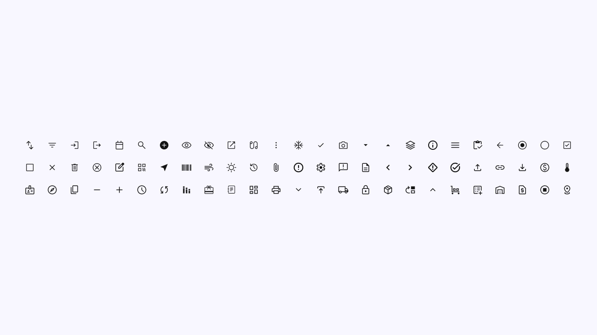
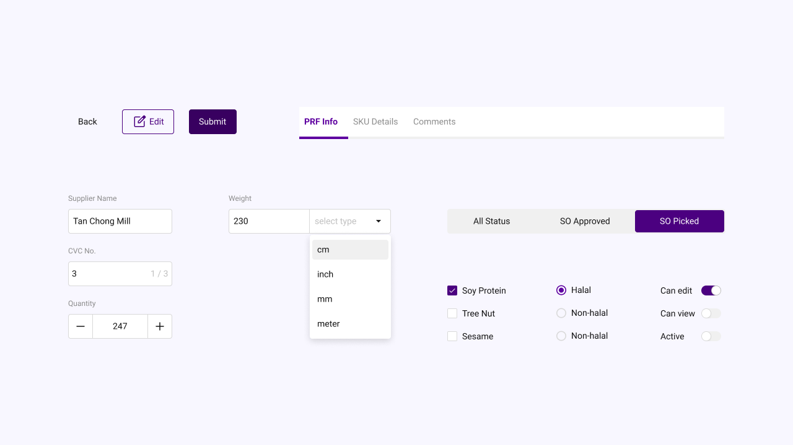

UI Kit
The Gist
One of the biggest problems with DPO's internal platforms was inconsistency — buttons looked different, inputs behaved differently, and components were being reinvented across every system. Inspired by Atomic Design, I built a UI Kit made up of reusable atoms, molecules, and organisms to bring everything together. It unified the visual language and sped up our workflow — like Legos on steroids.
Timeline: 1 Month - Now (The UI Kit is a constantly growing organism)
My Role: UI Kit Librarian & Custodian
The Problem
To the credit of the developers, they did use a template as a base. But over time, as more features were piled on, that sleek template slowly evolved into a Frankenstein of colourful buttons, inconsistent layouts, and awkward flows. Making things worse, each developer handled their own platform in their own way — which meant the UI across systems began to look.. same-same but different.
Design Process
Logically, a full scale UI Kit will take months to develop. By a team of designers. But alas, I am the only designer in the department 😆. So I need to scale it down to the essentials and the most reused, high impact components.
Font
I started with the foundation, the font. Roboto, I choose you! It's checks all my requirements:
- Free (It's on Google Fonts)
- Versatile (comes in tons of weight options)
- Optimized for legibility on screens (it is built for Android)
Colours
The colours was pretty straightforward. I set a neutral colour for generic items like borders and fonts — the kind of things that should fade into the background. Each system already have their own logo (designed by your's truly 😎), so I used their primary brand colours as the base. From there, I expanded and tweaked the palette as I built out each platform.
Icons
This is pretty straightforward. I use Google's Material Symbol straight from their Figma plugin. Since I'm already using Android's font, why not use their icons too. So far, it served me pretty damn well. Everything I need is there. No complaints. Job done.
Buttons & Input Fields
Buttons is buttons. I've made fancy buttons in the past (because I'm a designer) for a particular website and I regret making such a thing. For these internal systems, I keep it simple and unmistakable. A button that looks like a button. An input field that looks like an input field.
Gutes design ist so wenig design wie möglich.
Good design is as little design as possible.
Dan Lain-lain
I used the basic components — the atoms and molecules — as the foundation to design each platform. But of course, in a UI Kit, there's more than just buttons and inputs. We've got tabs, tables, menus, toggles, toasts… whatever, and to write about it all, this page is gonna be very, very long. Good for SEO but bad for YOU.
The others are added on as I build each platform. Missing a toggle? Throw one in. Missing a toast? Slot that in. A UI Kit is never static. It grows as the product grows. in fact, I just added segmented controls to it the other day. It's never truly done.